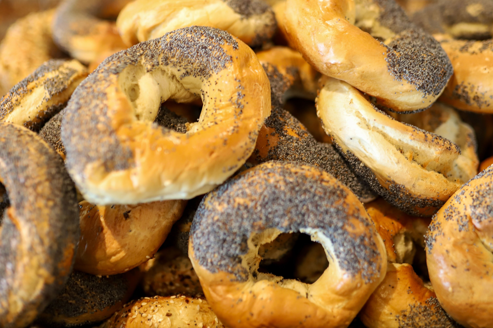

Chef Erick Wood - Honey Seed

Review
Honey Seed has recently become one of my favorite brunch spots. My go-to is an Eggs Benedict on one of their signature everything bagels with a blueberry lavendar mimosa (or multiple). I'm usually not a huge fan of ham, but whatever they use is perfect on top of on of their fresh bagels served with runny eggs and hollandaise sauce.
I also recently tried their tater-tots, and oh my gosh that is definitely going to be added to my regular order. They are better described as a potato hush-puppy, the way it's battered and fried with small chunks of shallot mixed inside. Their mixed fruit bowl is also one of the best ones I've ever had. Usually, when you order a side of mixed fruit at a restaurant, you get a measly bowl of unsweet melons, strawberries, and maybe a grape, that's been sitting in a container for who knows how long. But here at Honey-Seed, the fruit is super fresh and sweet. I know this isn't a "dish" that anyone makes, but this detail alone shows me how much the Chef cares about what goes out into the dining room.